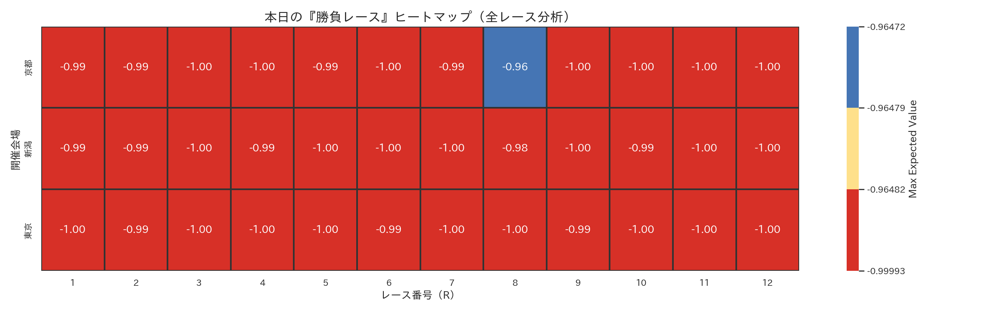
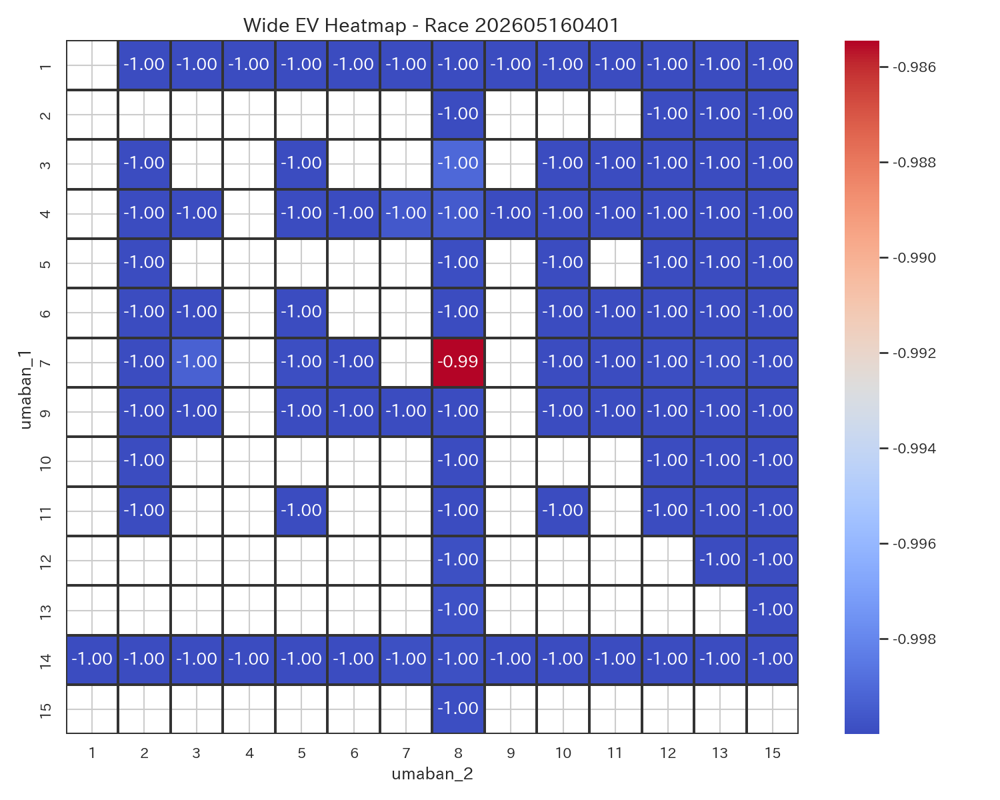
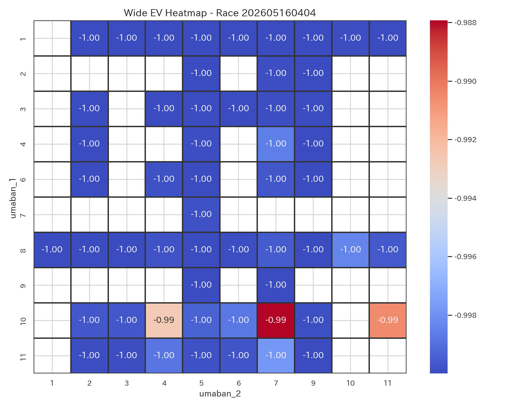
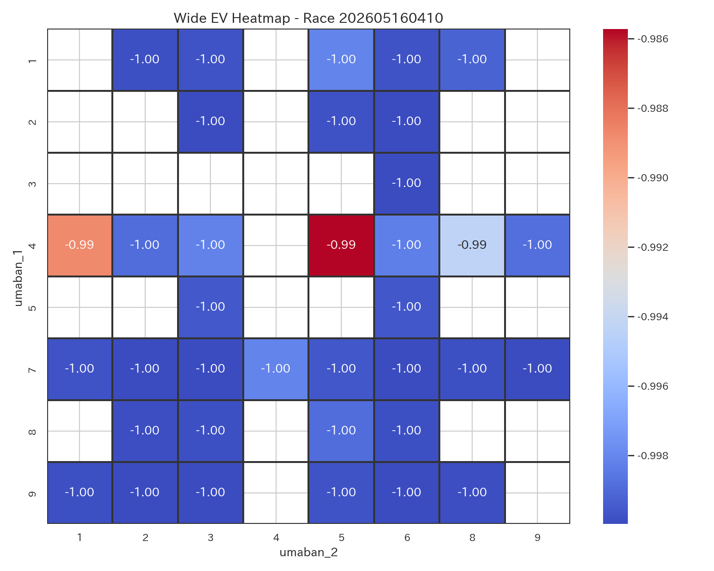
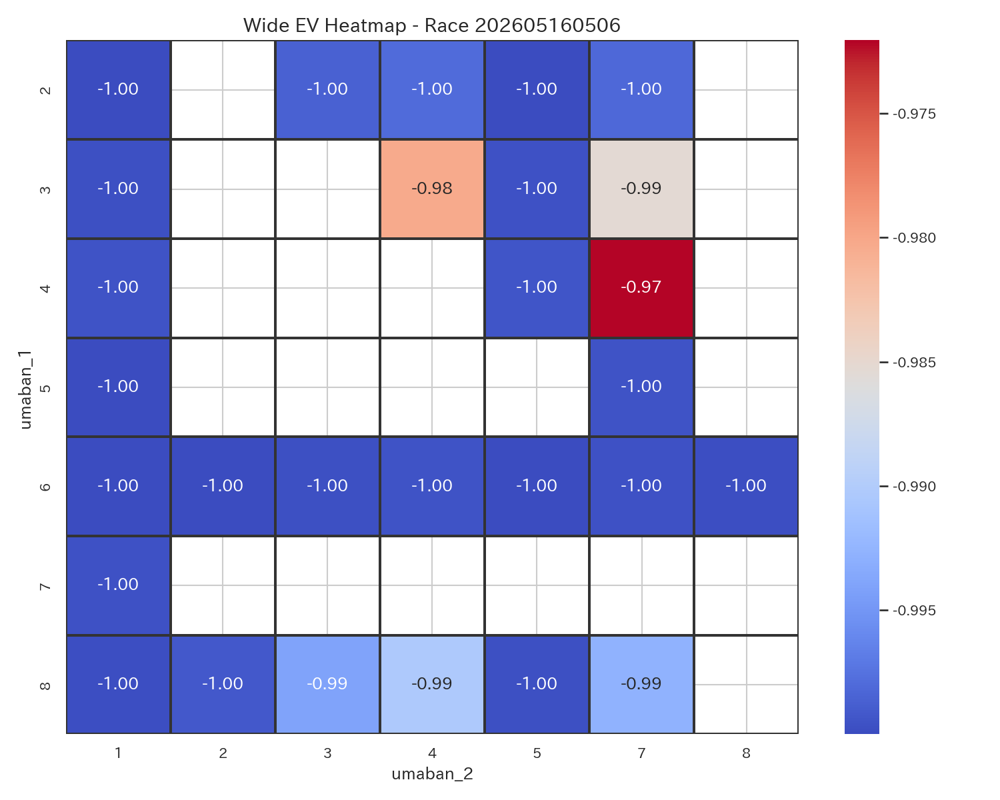
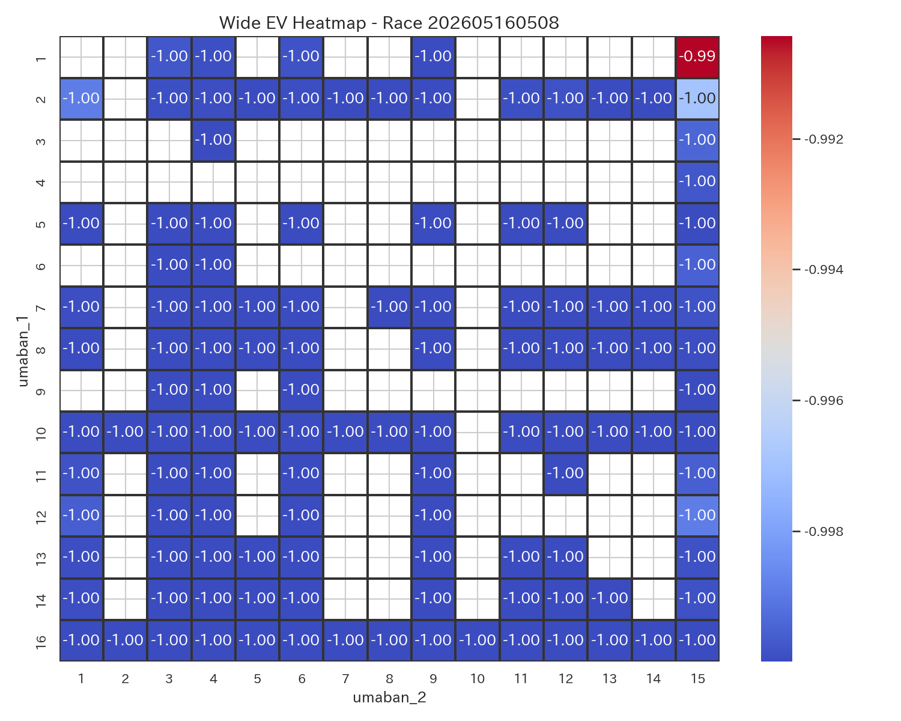
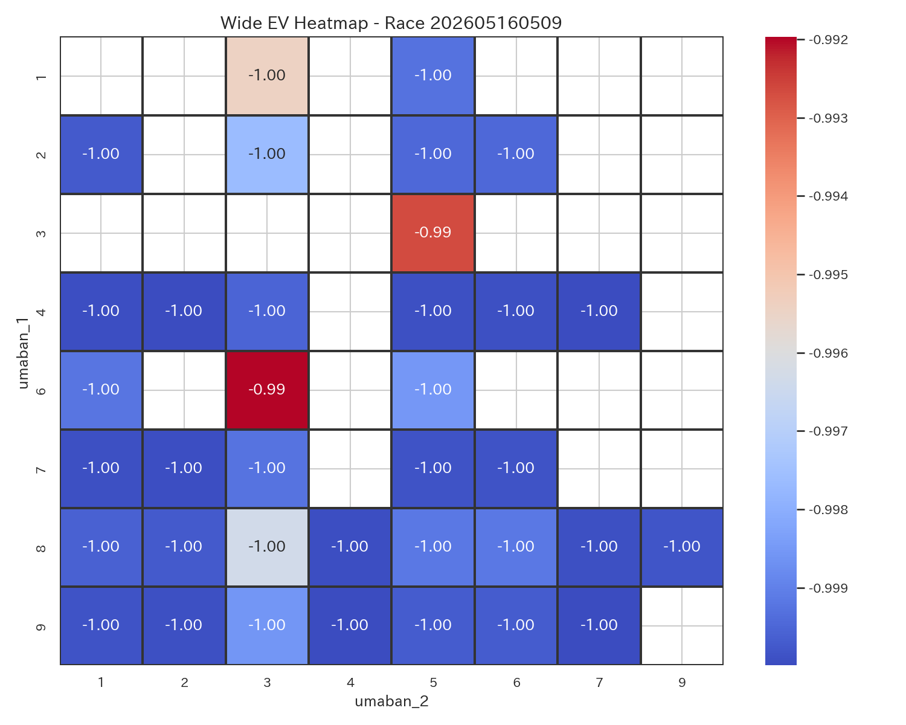
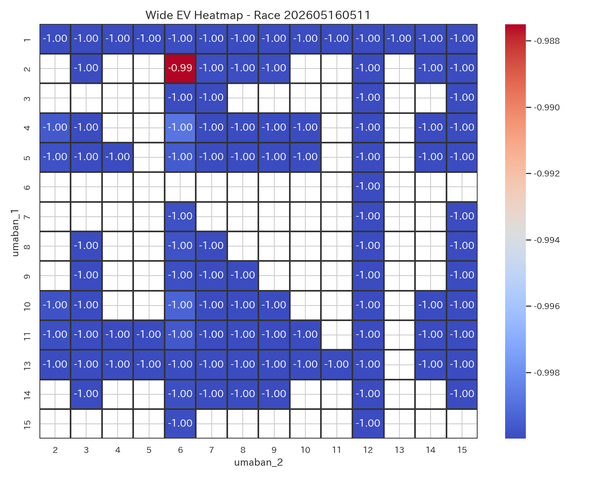
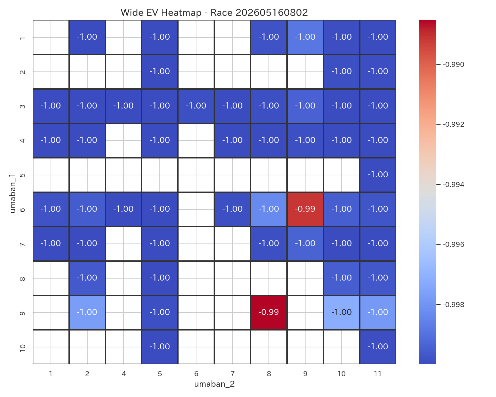
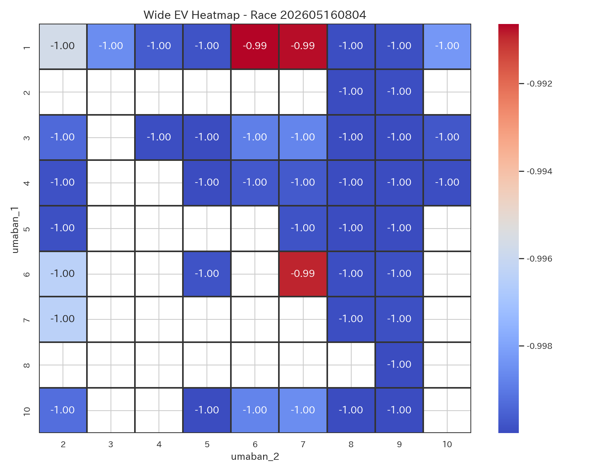
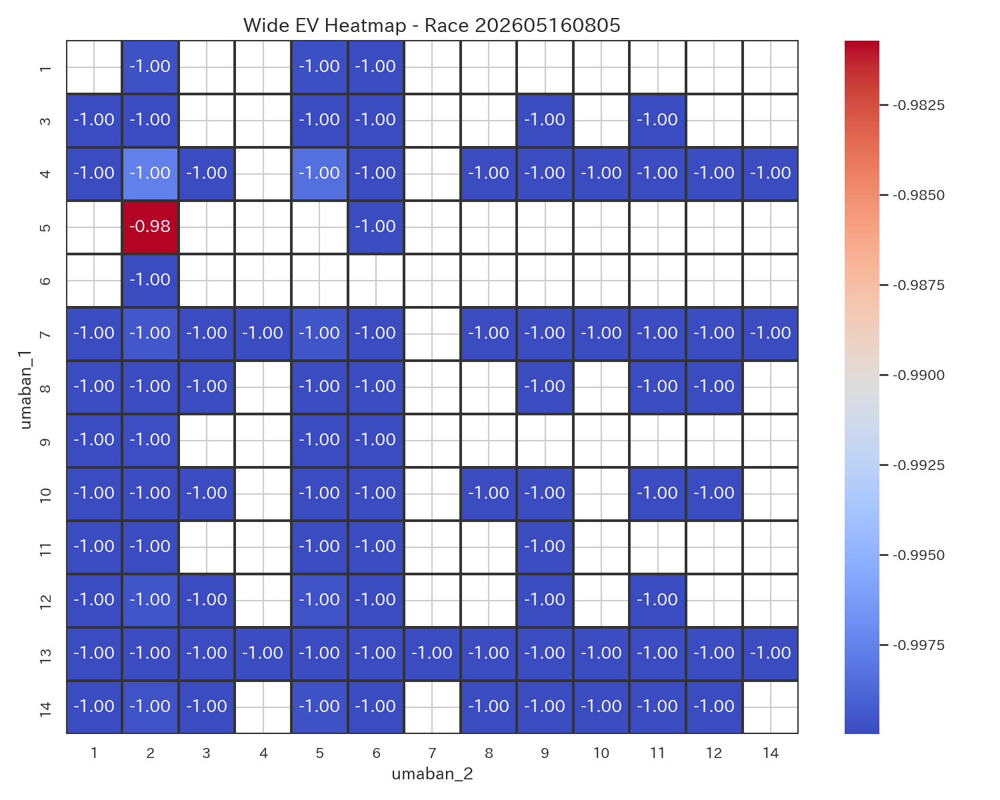
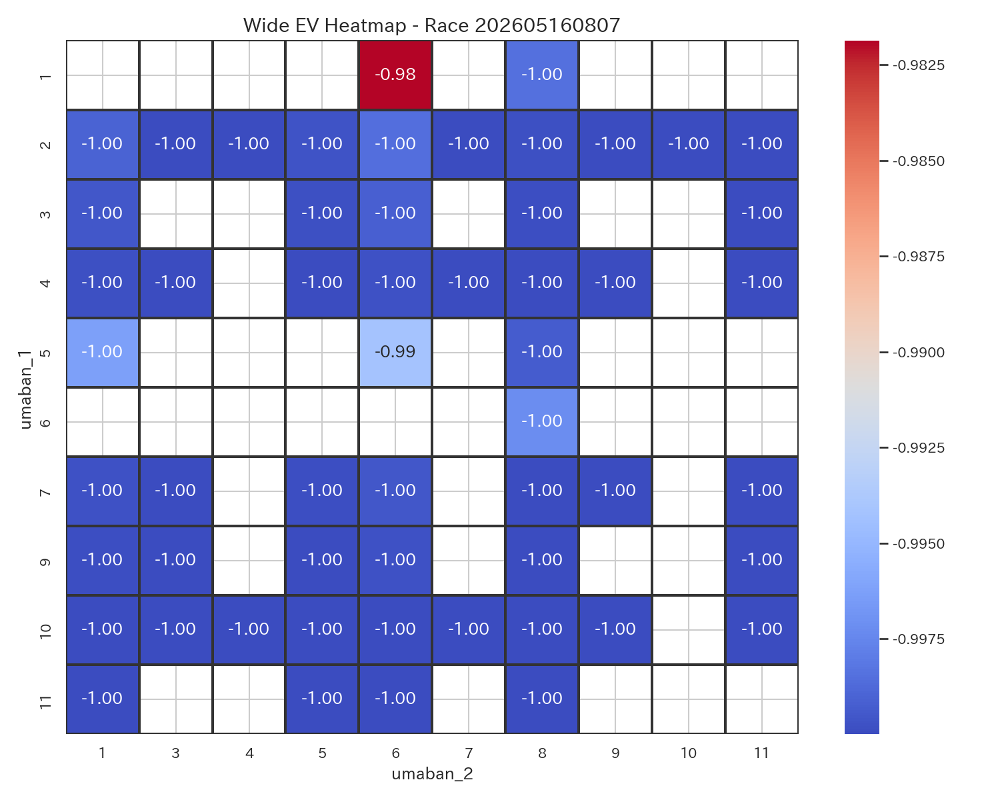
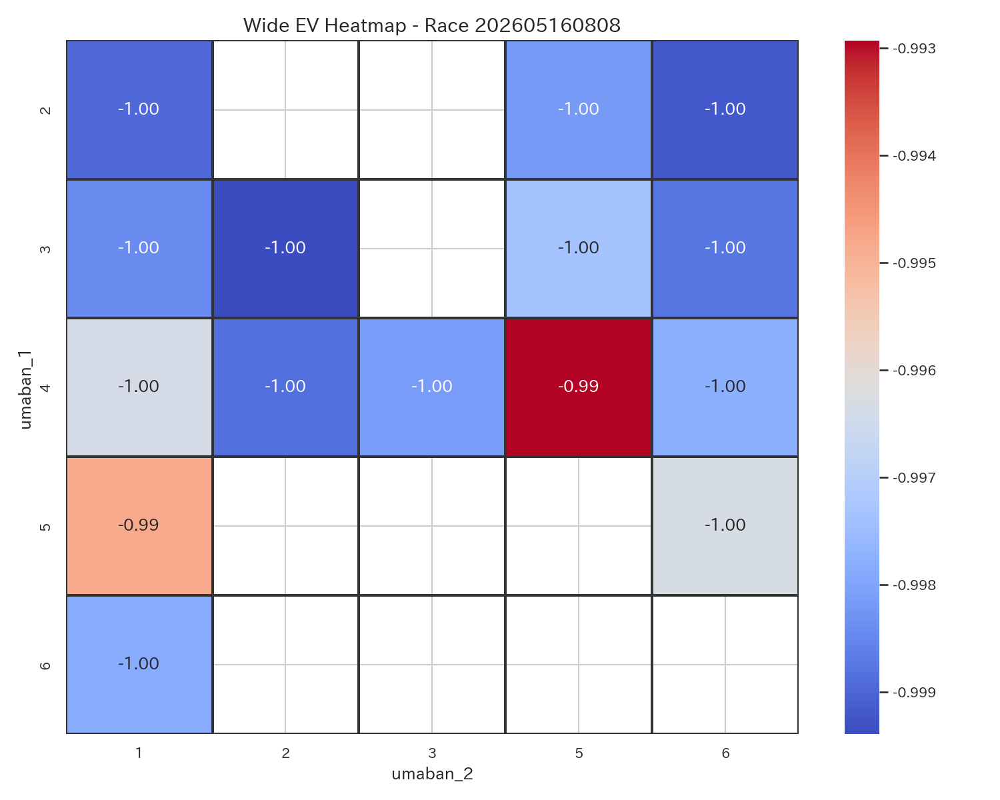
| race_label_ui | race_score | difficulty_score | comment |
|---|---|---|---|
| 京都8R | 0.754086 | 0.350000 | 勝負度が非常に高いレースです。 堅い決着が見込まれるレースです。 本命は 4-5。 EV=-0.97, p_hit=0.009 とバランスが良好です。 次点候補は 4-1。 EV=-0.99。 適度なリスクで、標準的な賭け方が適しています。 |
| 東京6R | 0.737600 | 0.424228 | 勝負度が高めのレースです。 比較的堅めの決着が期待できます。 本命は 4-7。 EV=-0.97, p_hit=0.009 とバランスが良好です。 次点候補は 3-4。 EV=-0.98。 適度なリスクで、標準的な賭け方が適しています。 |
| 新潟4R | 0.515433 | 0.446132 | やや勝負度があるレースです。 比較的堅めの決着が期待できます。 本命は 10-11。 EV=-0.98, p_hit=0.007 とバランスが良好です。 次点候補は 11-7。 EV=-1.00。 適度なリスクで、標準的な賭け方が適しています。 |
| 京都5R | 0.473701 | 0.541267 | やや勝負度があるレースです。 比較的堅めの決着が期待できます。 本命は 5-2。 EV=-0.98, p_hit=0.006 とバランスが良好です。 次点候補は 4-2。 EV=-1.00。 適度なリスクで、標準的な賭け方が適しています。 |
| 京都4R | 0.454347 | 0.403909 | やや勝負度があるレースです。 比較的堅めの決着が期待できます。 本命は 1-6。 EV=-0.98, p_hit=0.005 とバランスが良好です。 次点候補は 6-7。 EV=-0.99。 適度なリスクで、標準的な賭け方が適しています。 |
| 京都7R | 0.429134 | 0.427448 | やや勝負度があるレースです。 比較的堅めの決着が期待できます。 本命は 1-6。 EV=-0.98, p_hit=0.005 とバランスが良好です。 次点候補は 5-6。 EV=-0.99。 適度なリスクで、標準的な賭け方が適しています。 |
| 京都2R | 0.394706 | 0.426714 | 勝負度は低めで、慎重に扱いたいレースです。 比較的堅めの決着が期待できます。 本命は 6-9。 EV=-0.99, p_hit=0.004 とバランスが良好です。 次点候補は 9-8。 EV=-0.99。 適度なリスクで、標準的な賭け方が適しています。 |
| 東京11R | 0.366050 | 0.559761 | 勝負度は低めで、慎重に扱いたいレースです。 やや荒れやすい傾向があります。 本命は 2-6。 EV=-0.99, p_hit=0.004 とバランスが良好です。 次点候補は 10-6。 EV=-1.00。 適度なリスクで、標準的な賭け方が適しています。 |
| 東京8R | 0.338622 | 0.591810 | 勝負度は低めで、慎重に扱いたいレースです。 やや荒れやすい傾向があります。 本命は 1-15。 EV=-0.99, p_hit=0.003 とバランスが良好です。 次点候補は 2-15。 EV=-1.00。 適度なリスクで、標準的な賭け方が適しています。 |
| 新潟10R | 0.328390 | 0.341597 | 勝負度は低めで、慎重に扱いたいレースです。 堅い決着が見込まれるレースです。 本命は 4-1。 EV=-0.99, p_hit=0.003 とバランスが良好です。 次点候補は 4-5。 EV=-0.99。 適度なリスクで、標準的な賭け方が適しています。 |
| 新潟1R | 0.309779 | 0.549805 | 勝負度は低めで、慎重に扱いたいレースです。 比較的堅めの決着が期待できます。 本命は 7-8。 EV=-0.99, p_hit=0.003 とバランスが良好です。 次点候補は 3-8。 EV=-1.00。 適度なリスクで、標準的な賭け方が適しています。 |
| 東京9R | 0.300426 | 0.331519 | 勝負度は低めで、慎重に扱いたいレースです。 堅い決着が見込まれるレースです。 本命は 6-3。 EV=-0.99, p_hit=0.003 とバランスが良好です。 次点候補は 3-5。 EV=-0.99。 適度なリスクで、標準的な賭け方が適しています。 |
| race_label_ui | bet_type | selection_ui | umaban_1 | umaban_2 | bet_score | ev | p_hit | odds | return_amount | hit_status | is_nonstarter | is_nonstarter_1 | is_nonstarter_2 |
|---|---|---|---|---|---|---|---|---|---|---|---|---|---|
| 東京9R | wide | 6-3 | 6 | 3 | 0.359102 | -0.991965 | 0.002678 | 1.8 | 0.0 | はずれ | 0.0 | 0.0 | 0.0 |
| 東京8R | wide | 1-15 | 1 | 15 | 0.404603 | -0.990437 | 0.003188 | 2.1 | 230.0 | 的中 | 0.0 | 0.0 | 0.0 |
| 東京6R | wide | 4-7 | 4 | 7 | 0.939447 | -0.972065 | 0.009312 | 1.5 | 0.0 | はずれ | 0.0 | 0.0 | 0.0 |
| 東京6R | wide | 3-4 | 3 | 4 | 0.734876 | -0.980324 | 0.006559 | 1.7 | 180.0 | 的中 | 0.0 | 0.0 | 0.0 |
| 東京11R | wide | 2-6 | 2 | 6 | 0.485724 | -0.987383 | 0.004206 | 1.8 | 0.0 | はずれ | 0.0 | 0.0 | 0.0 |
| 新潟4R | wide | 10-11 | 10 | 11 | 0.739483 | -0.978344 | 0.007219 | 1.5 | 170.0 | 的中 | 0.0 | 0.0 | 0.0 |
| 新潟1R | wide | 7-8 | 7 | 8 | 0.371812 | -0.991528 | 0.002824 | 2.0 | 210.0 | 的中 | 0.0 | 0.0 | 0.0 |
| 新潟10R | wide | 4-1 | 4 | 1 | 0.390492 | -0.990924 | 0.003025 | 1.7 | 0.0 | はずれ | 0.0 | 0.0 | 0.0 |
| 新潟10R | wide | 4-5 | 4 | 5 | 0.377443 | -0.991451 | 0.002850 | 1.9 | 0.0 | はずれ | 0.0 | 0.0 | 0.0 |
| 京都8R | wide | 4-5 | 4 | 5 | 0.950817 | -0.971739 | 0.009420 | 1.4 | 0.0 | はずれ | 0.0 | 0.0 | 0.0 |
| 京都8R | wide | 4-1 | 4 | 1 | 0.604849 | -0.985707 | 0.004764 | 1.7 | 0.0 | はずれ | 0.0 | 0.0 | 0.0 |
| 京都7R | wide | 1-6 | 1 | 6 | 0.587656 | -0.983777 | 0.005408 | 1.5 | 0.0 | はずれ | 0.0 | 0.0 | 0.0 |
| 京都5R | wide | 5-2 | 5 | 2 | 0.672717 | -0.980703 | 0.006432 | 1.9 | 210.0 | 的中 | 0.0 | 0.0 | 0.0 |
| 京都4R | wide | 1-6 | 1 | 6 | 0.574264 | -0.984521 | 0.005160 | 2.7 | 0.0 | はずれ | 0.0 | 0.0 | 0.0 |
| 京都4R | wide | 6-7 | 6 | 7 | 0.483671 | -0.988179 | 0.003940 | 2.6 | 0.0 | はずれ | 0.0 | 0.0 | 0.0 |
| 京都2R | wide | 6-9 | 6 | 9 | 0.485456 | -0.987625 | 0.004125 | 1.6 | 170.0 | 的中 | 0.0 | 0.0 | 0.0 |
| 京都2R | wide | 9-8 | 9 | 8 | 0.475335 | -0.988034 | 0.003989 | 2.3 | 0.0 | はずれ | 0.0 | 0.0 | 0.0 |
勝負度が非常に高いレースです。 堅い決着が見込まれるレースです。 本命は 4-5。 EV=-0.97, p_hit=0.009 とバランスが良好です。 次点候補は 4-1。 EV=-0.99。 適度なリスクで、標準的な賭け方が適しています。
勝負度が高めのレースです。 比較的堅めの決着が期待できます。 本命は 4-7。 EV=-0.97, p_hit=0.009 とバランスが良好です。 次点候補は 3-4。 EV=-0.98。 適度なリスクで、標準的な賭け方が適しています。
やや勝負度があるレースです。 比較的堅めの決着が期待できます。 本命は 10-11。 EV=-0.98, p_hit=0.007 とバランスが良好です。 次点候補は 11-7。 EV=-1.00。 適度なリスクで、標準的な賭け方が適しています。
やや勝負度があるレースです。 比較的堅めの決着が期待できます。 本命は 5-2。 EV=-0.98, p_hit=0.006 とバランスが良好です。 次点候補は 4-2。 EV=-1.00。 適度なリスクで、標準的な賭け方が適しています。
やや勝負度があるレースです。 比較的堅めの決着が期待できます。 本命は 1-6。 EV=-0.98, p_hit=0.005 とバランスが良好です。 次点候補は 6-7。 EV=-0.99。 適度なリスクで、標準的な賭け方が適しています。
やや勝負度があるレースです。 比較的堅めの決着が期待できます。 本命は 1-6。 EV=-0.98, p_hit=0.005 とバランスが良好です。 次点候補は 5-6。 EV=-0.99。 適度なリスクで、標準的な賭け方が適しています。
勝負度は低めで、慎重に扱いたいレースです。 比較的堅めの決着が期待できます。 本命は 6-9。 EV=-0.99, p_hit=0.004 とバランスが良好です。 次点候補は 9-8。 EV=-0.99。 適度なリスクで、標準的な賭け方が適しています。
勝負度は低めで、慎重に扱いたいレースです。 やや荒れやすい傾向があります。 本命は 2-6。 EV=-0.99, p_hit=0.004 とバランスが良好です。 次点候補は 10-6。 EV=-1.00。 適度なリスクで、標準的な賭け方が適しています。
勝負度は低めで、慎重に扱いたいレースです。 やや荒れやすい傾向があります。 本命は 1-15。 EV=-0.99, p_hit=0.003 とバランスが良好です。 次点候補は 2-15。 EV=-1.00。 適度なリスクで、標準的な賭け方が適しています。
勝負度は低めで、慎重に扱いたいレースです。 堅い決着が見込まれるレースです。 本命は 4-1。 EV=-0.99, p_hit=0.003 とバランスが良好です。 次点候補は 4-5。 EV=-0.99。 適度なリスクで、標準的な賭け方が適しています。
勝負度は低めで、慎重に扱いたいレースです。 比較的堅めの決着が期待できます。 本命は 7-8。 EV=-0.99, p_hit=0.003 とバランスが良好です。 次点候補は 3-8。 EV=-1.00。 適度なリスクで、標準的な賭け方が適しています。
勝負度は低めで、慎重に扱いたいレースです。 堅い決着が見込まれるレースです。 本命は 6-3。 EV=-0.99, p_hit=0.003 とバランスが良好です。 次点候補は 3-5。 EV=-0.99。 適度なリスクで、標準的な賭け方が適しています。